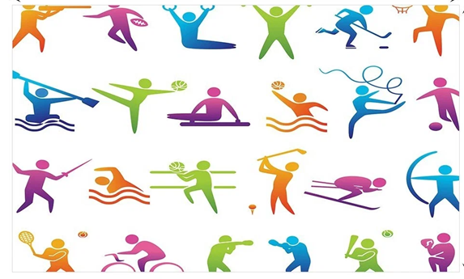

Бұл күнделікті өмірде дұрыс дәрумендерге бай тағамдарды тұтыну, кітап оқу, далада көп серуендеу, жаттығуларды жасау, дұрыс ұйықтау. Ол біздің миымызға да, тікелей денсаулығымызға да әсер етеді. Бізге қарапайым нәрсе болып көрінгенімен, оны күнделікті өмірде сақтау өте қиын болып табылады.
